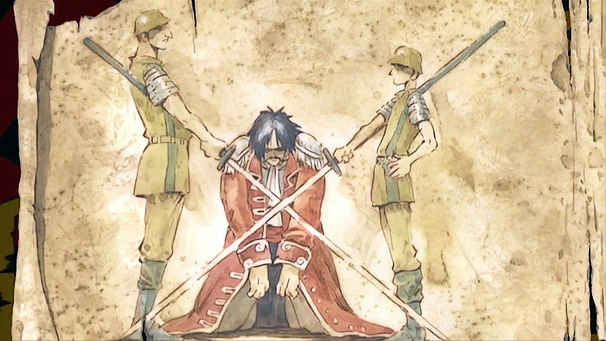

Gold Roger. Antes de ser executado, suas últimas palavras levaram multidões aos mares: ‘Querem o meu tesouro? Fiquem à vontade para pegá-lo! Procurem, nele está tudo que este mundo pode dar a vocês!’. Homens cheio de esperança partiram em busca desse tesouro dos sonhos em direção à Grand Line, e assim teve início A Grande Era dos Piratas!”
Você decide seguir seu sonho de criança, então se torna um pirata.